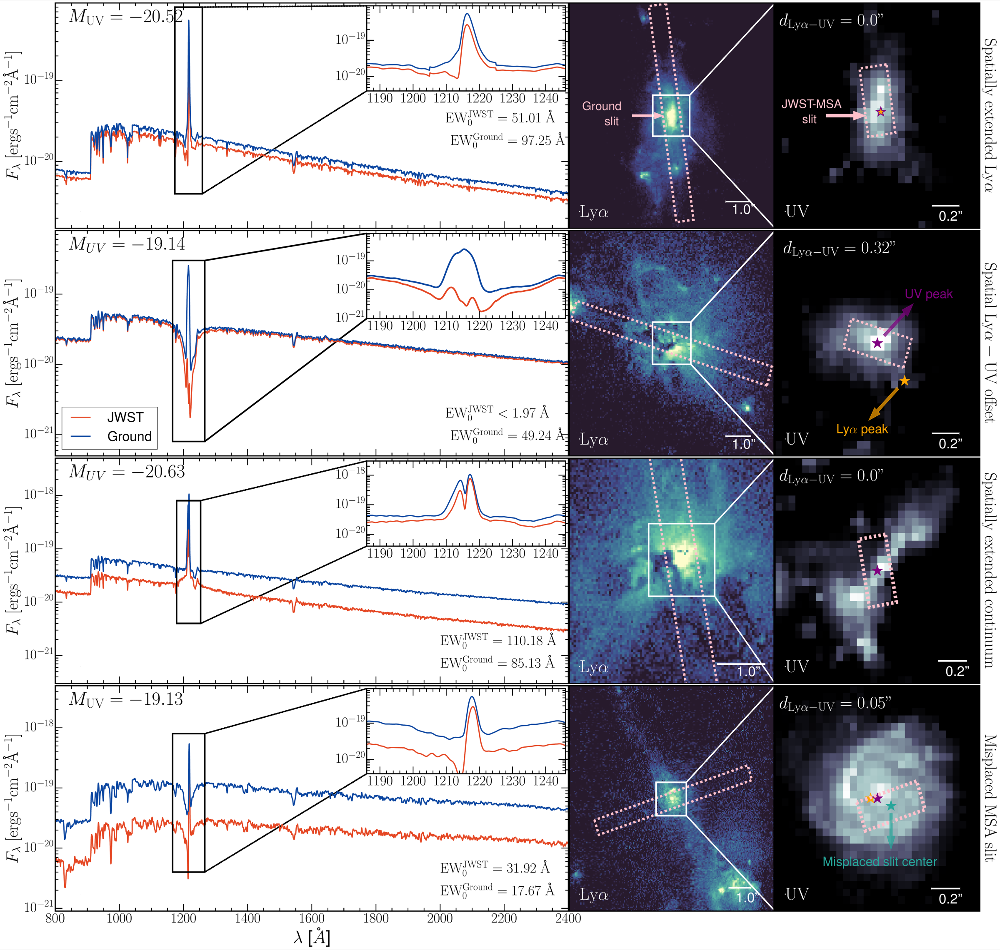
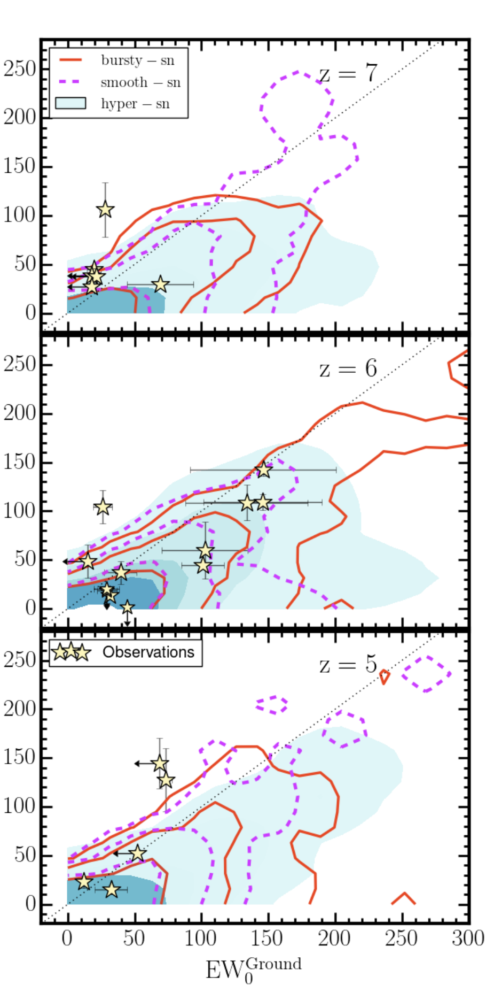
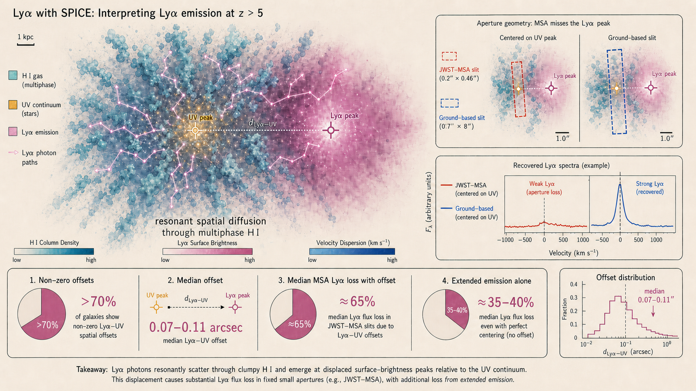

Select resolved high-redshift systems
The analysis post-processes SPICE galaxies with stellar masses above 108 M⊙ at z = 5, 6, and 7. Their UV magnitudes span approximately -23 to -16, covering luminous systems accessible to current spectroscopy.
Research project 02 · Lyα
Lyα photons diffuse spatially and spectrally through the multiphase gas around early galaxies. SPICE predicts that this transfer commonly displaces the emergent Lyα peak from the ultraviolet source; mock JWST and ground-based observations then measure the consequences.

Ultraviolet continuum points back to the stars more directly. Lyα repeatedly interacts with neutral hydrogen, diffusing in frequency and position before it reaches an observer.
SPICE does not impose an offset as an observational nuisance. The displacement emerges after photons from recombination and collisional excitation are propagated through anisotropic, dusty, multiphase gas. Scattering can produce an extended halo and move the brightest emergent Lyα region away from the compact UV source. More than 70% of the resolved simulated galaxies have a non-zero Lyα–UV offset.
Aperture geometry enters after that physical redistribution. A NIRSpec micro-shutter centred on the UV source can miss the displaced line peak that a wider ground-based slit includes. The paper forward-models both steps, first the radiative transfer that creates the morphology and then the instrument that samples it.
The analysis post-processes SPICE galaxies with stellar masses above 108 M⊙ at z = 5, 6, and 7. Their UV magnitudes span approximately -23 to -16, covering luminous systems accessible to current spectroscopy.
RASCAS propagates photons from recombination, collisional excitation, and the stellar continuum through hydrogen, deuterium, and dust. Each galaxy is viewed along 12 orientations to retain anisotropy.
Synthetic cubes use 0.05-arcsecond spatial pixels and roughly 0.13 Å spectral sampling. Flux is collected through 0.2 × 0.46 arcsecond JWST pseudo-slits and 0.7 × 8 arcsecond ground-based slits, with optional placement offsets up to 0.15 arcseconds.

A point on the dotted line has the same equivalent width in both apertures. Falling below it means JWST measures a deficit relative to the ground.
At z = 7, about 98% of centred mock observations sit below the one-to-one line. The offset narrows toward lower redshift but remains common.
The observed comparison sample occupies the broad region predicted by SPICE, including JWST non-detections of sources seen from the ground.
More than 70% of the simulated galaxies have non-zero Lyα–UV offsets after resonant transfer through their multiphase gas. Median offsets span about 0.07–0.11 arcseconds and broadly match observed distributions.
Every simulated galaxy in the selected sample has extended Lyα emission. Even when the Lyα and UV peaks coincide, the diffuse halo alone produces median pseudo-slit losses near 35–40%.
When a spatial offset is present, median pseudo-slit losses rise to about 65%. Depending on model and redshift, roughly 30–44% of these systems lose more than 95% of their Lyα flux.
Only about 22–24% of simulated Lyα emitters return consistent equivalent widths from the two aperture choices.
Offsets of 0–0.15 arcseconds between the micro-shutter and UV peak can undersample the continuum. For about a quarter of galaxies, the JWST equivalent width increases by a median factor of roughly four to five.
Of 60 cross-matched sources, 25 allow a conclusive comparison: 14 have values from both instruments, six favour JWST, and five are strong ground detections with restrictive JWST limits.
The line and continuum peaks coincide, but resonantly scattered Lyα extends outside the micro-shutter. JWST underestimates the line flux while measuring the continuum correctly.
The aperture is centred on the UV peak while the Lyα peak lies elsewhere. A sufficiently large offset can turn a ground-based emitter into a JWST non-detection.
A complex or merging stellar component can extend beyond the micro-shutter. Missing continuum pushes the JWST equivalent width upward even if most of the Lyα line is captured.
Optimising a shutter configuration for many targets can leave an individual slit slightly off-centre. Combined UV imaging and slit spectroscopy are needed to diagnose this case.
Resonant transfer through complex gas redistributes Lyα away from the compact ultraviolet source. The offset is therefore an astrophysical prediction of the model, not merely an aperture-centering error.
The observing geometry determines how much of that physical morphology is recovered. A micro-shutter centred on the stars generally suppresses Lyα when the emergent line peak is extended or displaced; if it instead misses part of a complex ultraviolet source, the measured equivalent width can increase. Comparing instruments therefore requires a forward model that propagates Lyα and continuum photons first, and applies the real aperture only afterwards.
